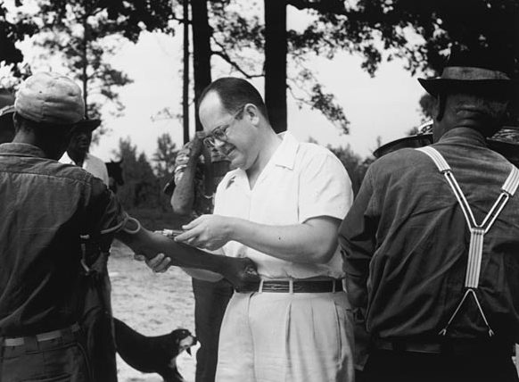

FILE A42-HM-001 // HEALTH & MEDICINE
The Tuskegee Syphilis Study
ASSESSMENT: Documented abuse; later claims require separate evidence.


The claim and its context
The U.S. Public Health Service followed Black men in Macon County, Alabama, from 1932 to 1972 under the false description of treatment for “bad blood.” Withholding effective penicillin after it became standard is substantially documented. This specific abuse does not prove that all vaccination or medical care is a coordinated plot.
The study enrolled 399 men with syphilis and 201 comparison participants to observe disease progression, not to conduct a modern placebo-controlled treatment trial. Press reporting ended the project in 1972, and a federal panel concluded it was ethically unjustified. That history should be stated plainly, without minimizing it as rumor.
What is documented
Federal records document deception, inadequate consent, and failure to offer penicillin as it became available. A government panel found risks were not adequately disclosed and that treatment access was impeded. This proves misconduct in a defined program, not that syphilis was invented or that all present care is unsafe.
Clinical and epidemiological evidence
This was not a clinical trial capable of estimating penicillin efficacy; that knowledge came from other clinical evidence. The scandal is strong evidence about research governance, not proof that current clinicians or vaccines are inherently untrustworthy. Scientific usefulness of records does not excuse the way they were obtained.
Contrary evidence and genuine uncertainty
Individual histories and the effect of each intervention are difficult to reconstruct because records are incomplete and care standards changed. Those gaps do not erase well-documented deception. Nor do they connect the event to unrelated vaccines, epidemics, or a present-day secret program without independent evidence.
Calibrated assessment
The study was a grave, documented violation and a lasting reason to require consent, oversight, and accountability. It does not validate generalized claims of a current ethnic extermination program. Historical betrayal deserves acknowledgment, not inflation into allegations the records cannot support.
A responsible evidence test
For any proposed extension, request named programs, dated records, independent corroboration, and evidence linking a specific intervention to harm. Compare the panel findings with clinical records and community histories. Personal decisions belong with a qualified clinician and public-health sources.
Source notes and limitations
- CDC — The Tuskegee StudyOfficial historical overview; compare with survivor testimony and archival records.
- HHS — Final report of the Tuskegee Syphilis Study Ad Hoc Advisory PanelFederal panel report; scope is the specific study and its ethics.
- Reverby — More than a metaphor: an historical understanding of TuskegeePeer-reviewed archival history; does not estimate a treatment effect.